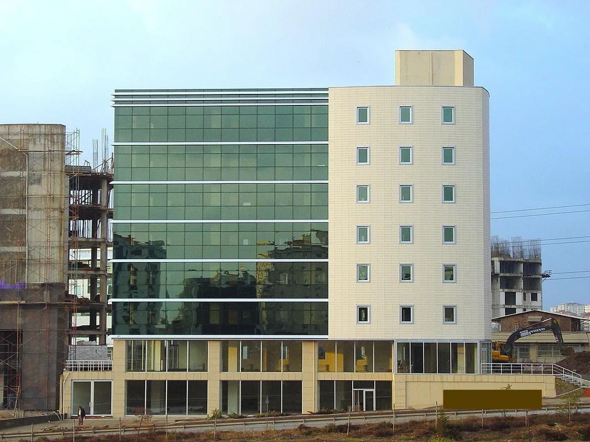
Plaza / Ticari Bina
Geçmiş çalışma örnekleri
Çalışma ağı ve ekip deneyiminden seçili satılan ve kiralanan mülkler. Bu kayıtlar, işlemlerin Murathan Arslan tarafından tek başına gerçekleştirildiği anlamına gelmez.
Portföy kataloğuna dönün
Plaza / Ticari Bina
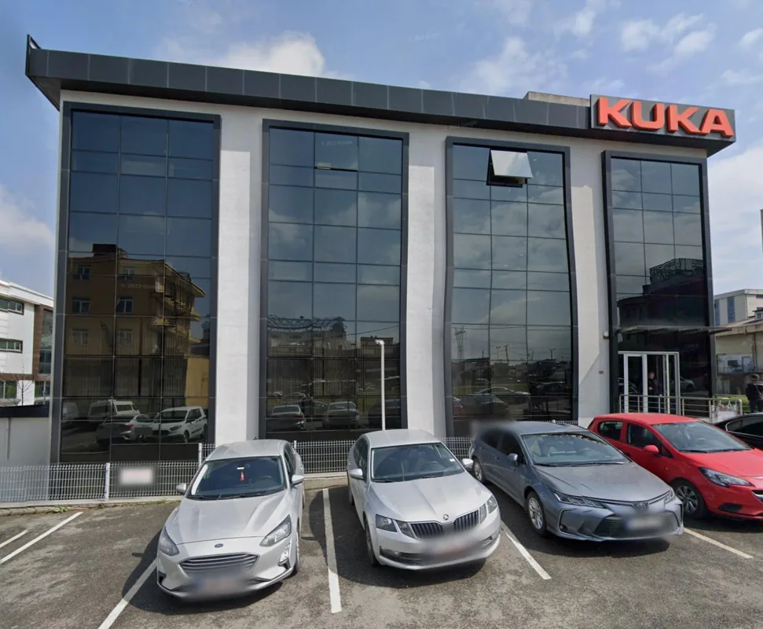
Plaza / Ticari Bina
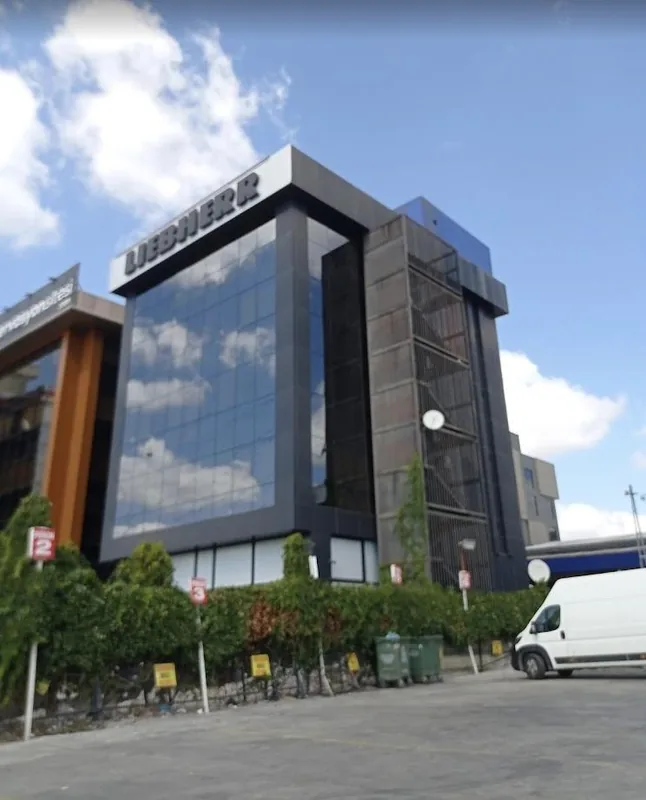
Plaza / Ticari Bina
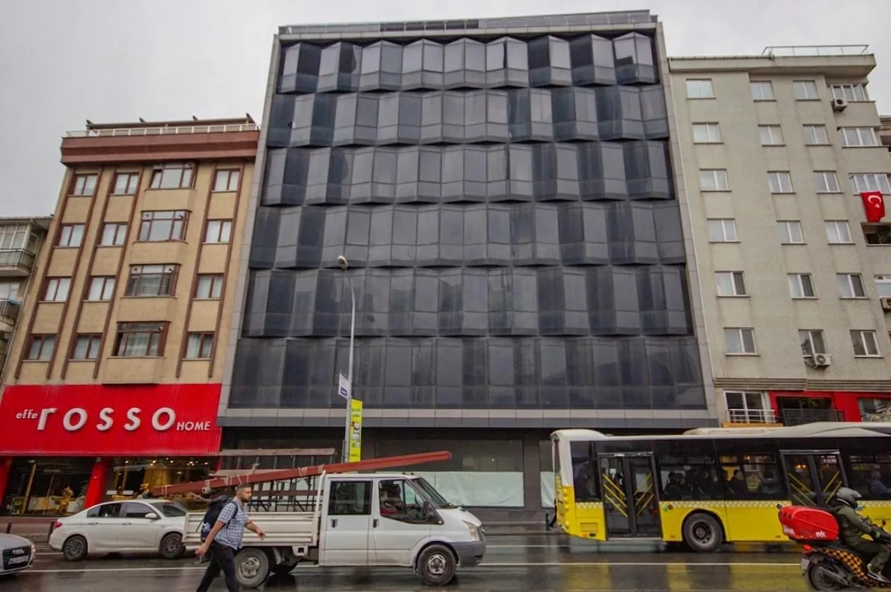
Mağazacılık / Ticari Bina
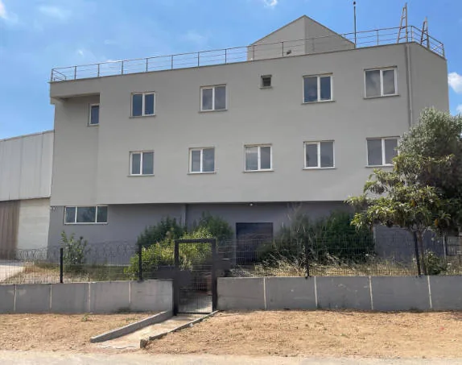
Kocaeli · Çayırova
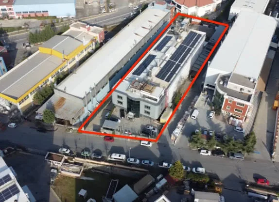
İstanbul · Birlik OSB
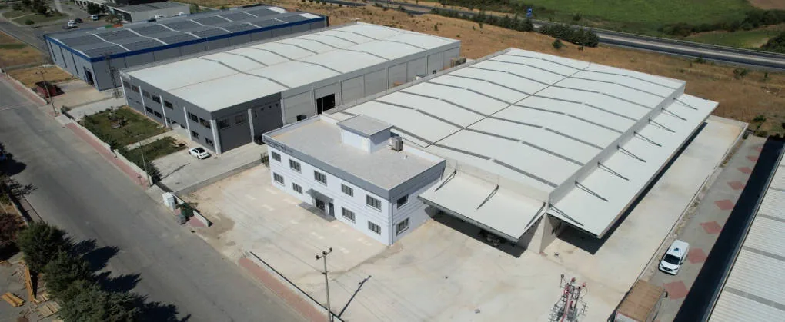
Çanakkale OSB
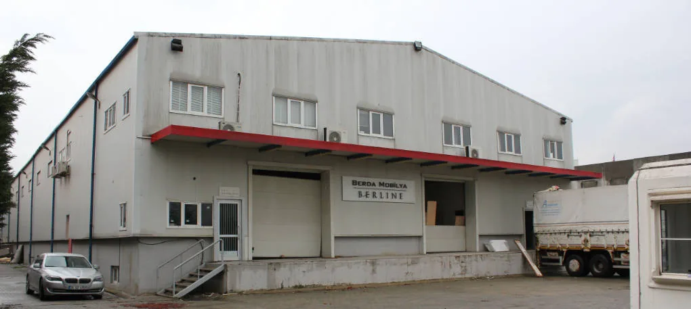
İstanbul · Tuzla · Birlik OSB
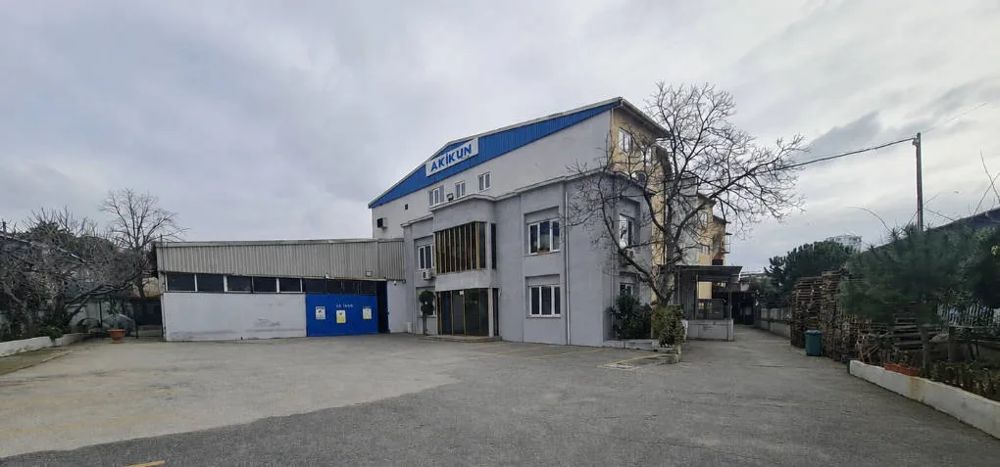
İstanbul · Kartal · Yakacık
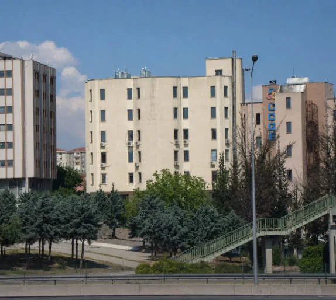
İstanbul · Bostancı
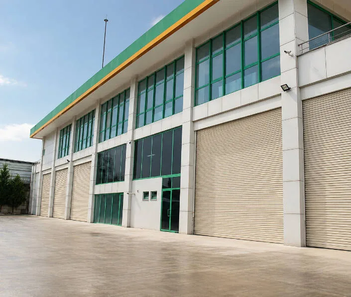
Kocaeli · Çayırova
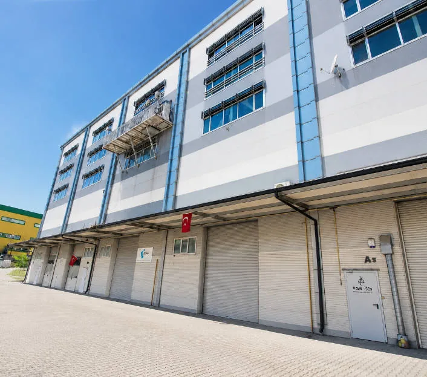
İstanbul · Tuzla · Orhanlı
Yeni ihtiyaçlar